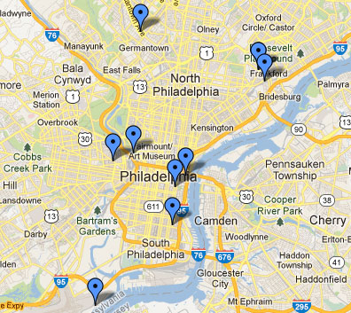

Hidden City
role: Director, CuratorThe Hidden City Philadelphia Festival celebrated the power of place through the imagination of contemporary artists, inspiring people to explore the city’s history and imagine new futures for its urban landscape. Artists of diverse disciplines and media create site-specific work that illuminated abandoned, obscure or inaccessible sites throughout the city.
The Hidden City Festival 2013 took place from May 23rd to June 30th, and featured a wide array of new media work, installations, performance projects and concerts, talks and tours at eight simultaneous exhibition locations across the city. The festival sites were locations of historical and community interest, including several buildings looking for new ideas to bring them back to life, from the vacant Germantown Town Hall, to Shivtei Yeshuron, a 19th century row house synagogue in South Philadelphia.
The Festival as a whole consisted of projects ranging from social experiments that invite the audience to participate, such as Jacob Wick’s creation of government offices for an imaginary “Free Germantown” inside Germantown Town Hall, to massive, sculptural installations by the collectives Rabid Hands and Dufala Brothers. The lineup of artists also included the collectives Camp Little Hope, King Britt and Data Garden, Ars Nova Workshop, and artists Ben Neiditz and Zach Webber, Andrew Dahlgren, and Ruth Scott Blackson.
The Hidden City Festival was supported by the Andy Warhol Foundation.
Additional support from The Barra Foundation and individual donors. Selected Links: NPR / Radio Times, Atlas Obscura, NBC, Philadelphia Inquirer, Philadelphia Magazine, Metro, The ArtBlog, Next City 